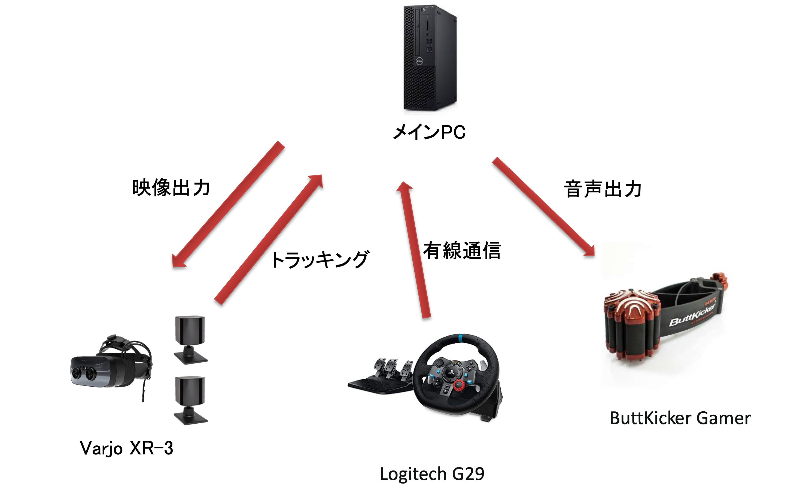
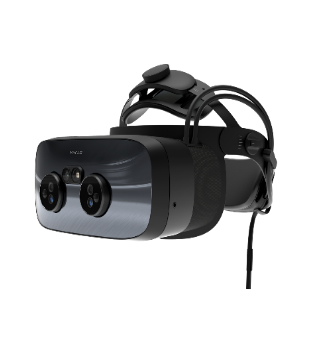
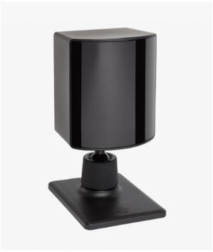
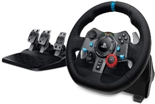
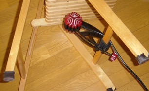
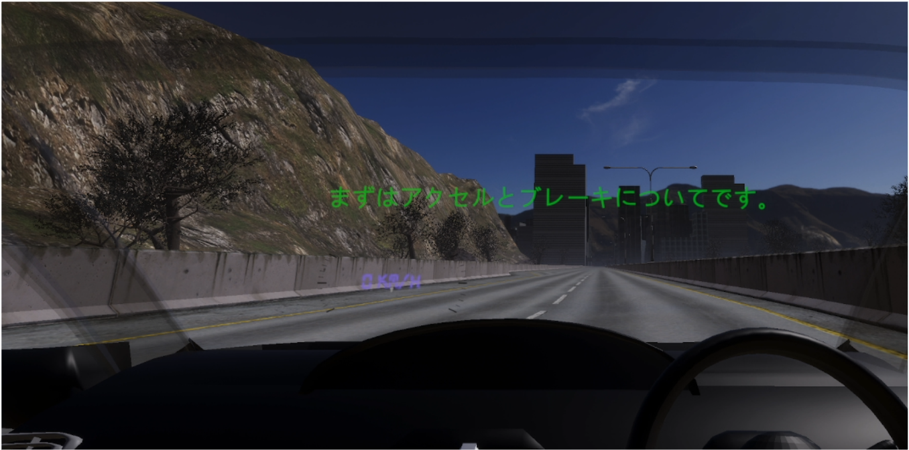
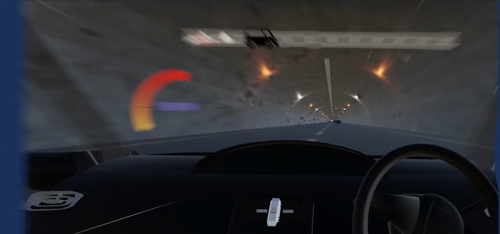
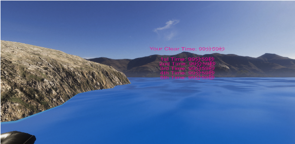

逃げ切れ！疾走犯！！！！！
本制作物は研究室における7人のグループワークで制作したものです
開発期間: 2023年02月~04月
開発環境: Unity 2020.3.28f1
開発言語: C#
担当箇所: メインプログラマー，コードレビュー
使用デバイス: Varjo XR-3，Base Station 2.0，Logitech G29，ButtKicker Gamer
ステップ数: 2517行
詳細
はじめに
-
開発背景
この作品は指導教員より，"ベクションを活用したVRゲームを作れ”と言うグループワーク課題の一環で制作しました．
ベクションとは自己運動感覚のことで，実際には自信が動いていないのに動いているかのように感じる現象のことです．
動きの感覚は本来体性感覚によって引き起こされるものですが，ベクションでは主に視覚情報を元に引き起こされます．
例としては，停車中の電車に乗っている際，ホーム向かい側の電車が動いただけなのに自信が動いたように感じるものが代表的です． -
役割
この課題において，私たちは次の役割に分担して作業を行いました．
- ディレクター：1人
- メインプログラマー：1人
- プログラマー：3人
- モデラー：2人
使用デバイス詳細
-
Varjo XR-3
超高解像度のVRヘッドセット（HMDという）で，現実世界と見間違えるほどの臨場感を提供することが可能です．

本VR作品を遊ぶためにはこのHMDが必須となります．
以下にVarjo XR-3の画像を示します． -
Base Station 2.0
高精度のトラッキングを提供するデバイスで，現実におけるHMDの動きを正確に検出し，滑らかな体験を実現します．

本VR作品を遊ぶためにはこのデバイスが必須となります．
以下にBase Station 2.0の画像を示します． -
Logitech G29
リアルなハンドルとペダルを備えたハンドル型コントローラーで，実際の車の運転に近い操作感を実現します．

本VR作品を遊ぶためにはこのハンドル型コントローラーが必須となります．
以下にLogitech G29の画像を示します． -
ButtKicker Gamer
ゲーム内の振動や衝撃を実際に体感できるデバイスで，よりリアルな体験を提供します．

本デバイスを利用することによってより没入感の高いVR体験を得ることができます．
以下にButtKicker Gamerの画像を示します．
ゲーム内容詳細
-
概要
本作品は銀行強盗が主人公の一人称視点VR疾走ゲームです．
プレイヤーは銀行強盗となって車を運転し，警察車両に追いつかれないように様々な障害物を避けながら脱出用の船を目指します． -
特徴
- ベクションによる現実のような疾走感を体験できる
- 現実では体験できないスリルと興奮を味わえる
- 制限時間内にゴールを目指すチャレンジングなゲームプレイ
- ハンドル型コントローラーを使った直感的な操作
- いくつかのイベントシーンによる単調さの解消
-
体験の流れ
-
チュートリアル
ゲームのプレイ方法を解説するシーンです． 以下はチュートリアルの1シーンです．
 -
ゲーム本編
以下はゲーム本編における障害物に衝突している動画です．
-
脱出用の船まで到達 or 警察車両に捕まる
クリアかゲームオーバーかの分岐点となります
-
エンディング
分岐によってエンディングが異なります．以下はバッドエンドのエンディングです．
-
-
基本アクション
- アクセル，ブレーキを踏んで加速，減速
- ハンドルを操作して障害物を回避
- ジャンプ台に乗ることで加速
実装詳細
-
ベクションの実装
本作品ではベクションを引き起こすためにいくつかの視覚的刺激を追加しています．
-
繰り返しのマップモデル
人間は周辺視野での変化に敏感であるため，天井の照明や送風機のパターンに繰り返しを入れることで動きをわかりやすくしています．
-
車両上部の透過
周辺視野でマップを見るため，自車両の上部を透過しています．
-
集中線
一定速度以上出た際に，速度に応じて漫画やアニメなどでよく見る集中線を眼前に表示することで疾走感を演出しています．
以下にベクションの実装が分かる画像を示します．
 -
-
イベントシーンの実装
本作品ではベクションを実装する上でマップが繰り返しのみになるため，退屈さを減らすためにいくつかのイベントシーンを差し込んでいます．
-
スーパージャンプシーン
大きなジャンプ台に乗って爽快感のあるスーパージャンプをするシーンです．
以下はスーパージャンプシーンの動画です． -
スローアクションシーン
壁を破壊して突撃してくる警察車両を避けるシーンです．
以下はそのシーンの動画です．
-
私の担当箇所
-
車両の加速，減速の程度の調整
アクセルやブレーキを踏んだ際や，障害物にぶつかった際の加速，減速の具合について調整を行いました．
-
イベントシーンの実装
全イベントシーンの処理について実装しました．
-
チュートリアル
チュートリアルにおける流れやテキスト表示などのすべての処理を担当しました．
-
全体的な命名規則などの管理
大規模なグループ開発が全員初めてであったため，進んでスクリプト名や変数名などの命名規則に関してなるべく統一させるようにしました．
これを行う上で私は全員が書いたスクリプトについて一度目を通して理解するようにした． -
クリア画面のスコアランキング表示
クリアタイムをランキング表示しており，クリアするたびにタイムを保存しています．

以下にスコア表示の例を示します． -
シーン遷移時の画面暗転
HMDをつけていることからプレイヤーはVR酔いをしやすい状態のため，シーン遷移時に急に画面が変わらないように，画面を1秒かけて暗転させてからシーン遷移するようにしています．